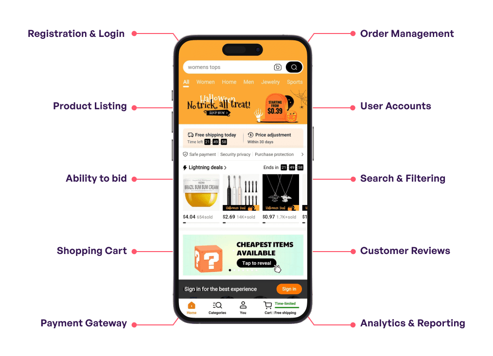

Central Washington University | IT312: Digital Designing Environments
Model-Based Systems Thinking
Systems engineering expands from the beginning of human development of systems. In the 20th century it was redefined by Ludwig von Bertalanffy as general systems theory. Its foundational approach is understanding the relationship between the critical parts of a system and its connection with other systems rather than following the approach of isolation.
System Thinking
System thinking is the practice of inspecting technical problems not as stationary but more as a pattern of interaction. The idea is to understand a system’s response based on how each component functions together. This approach is essential because systems are often non-linear and dynamic, meaning that small changes in one area can lead to unexpected consequences across the entire network (The Interaction Design Foundation, 2025). By shifting focus from individual parts to the relationships between them, practitioners can better anticipate these "feedback loops" and create more resourceful solutions (The Interaction Design Foundation, 2025).
Traditional & Linear Thinking
The traditional way of thinking evolves around knowing the location of where the system requires abstraction. Although it can be pictured as complex, it relies on the linear approach which focuses more on the cause-and-effect method reducing each element in pieces to understand a system, but the key is to dissect the components. While it can make things worse, it also lacks complexity, and these features can be seen and addressed through system thinking using the model-based approach.
Model Based Approach
The Model based approach is best to handle such challenges as there's been a shift in systems, to a now a digital complex method. Complex digital system design implements model-based systems engineering (MBSE) to manage text-based specification constraints through its systematic system development framework. Holt (2021) explains that modeling functions as a key link between system descriptions and system deployment because it shows how system components operate together in both operational and physical environments.
Thinking in Life Cycles
By: Jose Garcia
Central Washington University | IT312: Digital Designing Environments
Digital systems operating today require a systematic approach which spans their entire operational period from requirement definition to system retirement. The Systems Development Life Cycle (SDLC) serves as the core framework which systems engineering uses according to this research. The analysis uses industry standards and structured life cycle models to establish the SDLC framework which includes a detailed evaluation of linear and iterative and incremental models. This research examines how life cycle thinking enables designers to create digital systems which maintain their original design intent while sustaining themselves throughout time and adapting to technological advancements in modern fast-paced technological environment.
Introduction
A system in systems engineering and software development exists as a dynamic entity which has a limited time span before it reaches its end of life. The SDLC serves organizations as their method to manage the complex process of creating and maintaining these systems. This structured approach results in high-quality products that meet customer requirements at a higher level than expected while completing projects both on time and under budget (TechTarget, n.d.). The selection of appropriate project methods depends on understanding three main models which include linear and iterative and incremental approaches.
Defining the Systems Development Life Cycle
The Systems Development Life Cycle follows the system development process through multiple defined stages. The six core stages of a standard life cycle include:
Conception: The identifying phase where stakeholders establish requirements and define project boundaries to ensure the proposal is feasible (Intellectsoft, n.d.).
Development: Designers create the system, identify solutions, and break the system down into subsystems and components.
Production: The realization phase involving actual coding and building, where verification ensures the system matches technical requirements.
Utilization: The system is deployed and validated to confirm it addresses the user problem it was designed to solve.
Support: Ongoing maintenance, bug fixing, and help-desk assistance that allows the system to adjust to environmental changes.
Retirement: The end of the life cycle marking decommissioning, requiring protected asset removal and data migration.
Linear Life Cycle Models
The linear life cycle model follows the "Waterfall" approach, a sequential process requiring stage-by-stage completion before starting the next stage.
Characteristics, Advantages, and Drawbacks
Characteristics: Follows a strict framework where each stage produces results used as input for the next; requirements must stay constant.
Advantages: Easy to understand and manage because progress is clearly visible against a timeline.
Drawbacks: Keeping parameters fixed is a major limitation; detecting errors late in the cycle is difficult and costly to correct (TechTarget, n.d.).
Iterative Life Cycle Models
The iterative model consists of multiple recurring phases which construct the system through continuous loops instead of a single sequence.
Characteristics, Advantages, and Drawbacks
Characteristics: Teams create a fundamental version, evaluate it, and improve it in the following cycle.
Advantages: Flexible approach allowing for continuous feedback; serves as the base for Agile methodologies (Intellectsoft, n.d.).
Drawbacks: Challenging to manage from a budgetary and scheduling perspective; can lead to "analysis paralysis".
Incremental Life Cycle Models
The incremental model breaks system development into separate functional components known as increments.
Characteristics, Advantages, and Drawbacks
Characteristics: Increments are developed and delivered in stages; a partial version may be in use while the next is in development.
Advantages: Early delivery of value; users do not have to wait for the entire system to be finished to start using critical features.
Drawbacks: Architectural integrity is a primary challenge; if the first design isn't strong, the system may become a collection of disconnected patches.
The Importance of Life Cycle Thinking
Life cycle thinking drives digital system design and sustainability. Designers who evaluate Support and Retirement stages during the Conception phase develop systems with simpler maintenance processes. This is inherently tied to the Technology Life Cycle (Research, Ascent, Maturity, Decline); planning for updates enables systems to transition smoothly when technologies reach their end of life.
Conclusion
The Systems Development Life Cycle serves as the core methodology enabling professionals to manage complex modern engineering operations. Managing digital systems from beginning to end of service helps organizations create systems that survive through time while remaining strong against technological changes.
Designing for the Human Element
Jose Garcia Jr
Central Washington University
IT312: Designing the Digital Environment
Mr. John Durham
February 3, 2026
Designing for the Human Element
Designers who focus on human needs develop functional tools for the digital world, but other designers produce interfaces which users find easy to use. Human-Centered Design (HCD) philosophy shifts its focus from technical requirements to study how users experience products in their everyday activities. Designing for people requires architects to function as psychological architects who create spaces which honor the built-in human restrictions that affect how we perceive and focus and store information. Designers who merge empathy with cognitive science methods will develop interfaces which extend human behavior in a natural way.
Foundation of Human-Centered Design
Human-Centered Design serves as a design method which surpasses UI rules because designers need to develop empathetic abilities. As noted in the Field Guide to Human-Centered Design, HCD is "the backbone of our work" because it ensures that the solutions created are desired by the people they are meant to serve (IDEO.org, 2015, p. 9). Designers need to experience the user environment to discover hidden requirements through this design method.
The human-first approach receives direction from two main frameworks which serve as its foundation:
The international standard ISO 9241-210 provides a technical framework which directs organizations to use an iterative process consisting of observation, requirement-setting, and evaluation (ISO, 2019).
IDEO's Field Guide offers a social perspective focused on the mindsets of design, emphasizing three phases: Inspiration, Ideation, and Implementation.
Perception and the Power of Visual Hierarchy
Designers must understand how humans organize visual information to guide their attention effectively. Without a clear visual hierarchy, users experience cognitive overload. Visual hierarchy uses size, color, and contrast to signal importance.
According to Justinmind (n.d.), designers use scanning patterns like the F-Pattern or Z-Pattern to place critical information where the eye naturally lands. By utilizing high color contrast on primary buttons, designers exploit biological shortcuts, allowing the human eye to find important elements without having to "hunt" for them.
Universal Laws of the User Experience
To ensure consistency, designers utilize established UX laws that reflect human cognitive behavior, as detailed in the Laws of UX:
Jakob's Law suggests that users spend the vast majority of their time on other websites and apps. Consequently, they prefer your site to work exactly like the ones they already know (Yablonski, n.d.). When a designer uses a magnifying glass icon for "Search," they are practicing empathy by not forcing the user to learn a new visual language.
Fitts's Law states that the time required to move to a target depends on the distance to that target and the size of the target. In modern UI design, this means making primary action buttons large and placing them in easily accessible regions, such as the bottom of a mobile screen where a user's thumb naturally rests (Yablonski, n.d.).
Hick's Law dictates that the time it takes to make a decision increases with the number and complexity of choices. In a human-centered approach, designers avoid "overwhelming" the user. Instead of presenting twenty options simultaneously, they might use "progressive disclosure"—showing only the most necessary information first—to keep the user’s cognitive load manageable.
Miller's Law asserts that the average person can only keep roughly seven (plus or minus two) items in their working memory. Designers use chunking as their method to achieve this goal by breaking down information into smaller sections. The user experience becomes better when registration forms extend across multiple sections because these sections divide the process into smaller steps which help users achieve a sense of accomplishment instead of feeling fatigued (Yablonski, n.d.).
Conclusion
Ultimately, designing for people means acknowledging that we will not get it right on the first try. The IDEO framework supports the concept that "iteration is the best way to get it right" because designers can improve their products through direct human feedback according to IDEO.org (2015, p. 21). The combination of ISO 9241-210 standards with UX laws psychological knowledge enables us to develop digital environments which both look great and show proper respect for their human users.
Support User Thinking
Jose Garcia
Central Washington University
IT312: Designing the Digital Environment
Instructor: John Durham
February 10, 2026
Abstract
The laws of human psychology that underpin user interface design are the cornerstone of usability[cite: 9]. Ideally, every aspect of digital systems should be as human as possible[cite: 10]. This paper outlines in relation to the laws of UX by Yablonski (2020) and Designing with the Mind in Mind by Johnson (2014) the mental models, working memory and cognitive load management which are significant for usability, taking Jakob’s Law, Miller’s Law, the Doherty Threshold and Tesler’s Law as examples[cite: 11]. A case study of the common checkout process in on-line retail is also presented[cite: 12]. This allows us to identify the difficulties a user encounters when trying to finish purchasing items online[cite: 13]. These difficulties are often associated with high levels of cognitive load, lack of visual structure and poor usability[cite: 14]. We therefore contend that designers must abide by the Law of Conservation of Complexity in relation to the digital systems they design, to conserve complexity for the user and to simplify the task, thereby delivering systems that are user-friendly, efficient and human[cite: 15].
Usability: Shape Digital Interaction
Usability is often reduced to being just about design. A usable system is more than just how it looks[cite: 17]. To design a truly usable system we must consider more than just the visual elements on the screen – we must consider many more aspects of how people will interact with it[cite: 18]. We must consider memory, behavior and how the complexities of the human brain will interact with the system[cite: 19]. However, by applying the psychology laws and principles which underpin all human experience, we can design far more intuitive and usable systems[cite: 20].
Memory and Mental Models in User Interaction
Most users won’t approach a new application with a blank slate[cite: 22]. Instead, they bring with them the mental models they’ve accumulated from years of interacting with other websites[cite: 23]. Jakob’s Law, as described by Yablonski (2020), states that “users spend most of their time on other websites” and therefore will bring “prior expectations about how things should work” based on their experiences on those other sites[cite: 24]. The mental models that shape a user’s experience are derived from the user’s everyday experiences as well as the real world[cite: 25].
When we design using cognitive models, the user experiences a feeling of familiarity and ease[cite: 26]. If our design does not follow some of these models, the user has to work harder which can be uncomfortable and stressful[cite: 27]. Miller’s Law is a good principle to remember here. Miller’s Law tells us that our working memory can only hold about $7 \pm 2$ items[cite: 28]. This is why “chunking” is an important principle of design[cite: 29]. For example, an online form that has 20 fields long may be more user friendly if broken into “Personal Info,” “Shipping,” and “Payment”[cite: 30].
Consistency and Feedback
Usability is about being predictable too. This is one of Paul Carroll’s design mantras from Designing with the Mind in Mind[cite: 32]. Our focal attention can only deal with a few bits of information at any time, but our peripheral vision can take in lots of other information[cite: 33]. This means that we have a kind of mental spotlight that shines quite narrowly[cite: 34]. To make use of the power of habit to guide our behavior we need to make sure that there is consistency in our designs[cite: 35]. Consistency means that buttons are always in the same place as do labels on interface items[cite: 37].
Feedback in systems is also related to the Doherty Threshold[cite: 38]. A system that responds to your click within the 400ms Doherty Threshold is in a state of flow where everything works together and you feel confident[cite: 39]. A system that is unresponsive or that does not provide any visual feedback causes you to pause and wonder if you actually clicked the item[cite: 40]. The system then forces you to leave flow state and enter a “break in flow” state[cite: 41].
The Cost of Poor Design
An app that forces you to make an account, enter email, and view ads for every single item makes you think in an entirely different way[cite: 43]. Johnson (2014) wrote that the human eye is used to seeing structured information and when a checkout page lacks that structure the consumer is left with a page of unformatted text and fields that they must process individually[cite: 44]. The Decision Lab also agrees that when consumers are not provided with the right tradeoff between the number of options and ease of use, they will have a poor experience[cite: 45].
As a solution, apply progressive disclosure. Instead of showing all the form fields on the screen all at once, show just the minimum needed and then add more as the user starts to fill in what is shown[cite: 46]. Hick’s Law says the amount of time it takes for a person to make decisions increases with the number of choices[cite: 47]. By limiting the choices a user has to consider, we can keep the decision process quick and easy[cite: 48].
Validation
The Human Centered Design approach defined by Turgun allows designers to verify and validate the impact of their designs through several rounds of testing[cite: 50]. A/B Testing is a technique in which designers compare two versions of a user interface to see which is more user-friendly or matches the user’s mental model[cite: 51]. If Version A (single-page checkout) results in more abandoned carts than Version B (multi-step “chunked” checkout), we can assume we have reduced the cognitive load[cite: 52].
Complexity: Tesler’s Law
Conservation of Complexity is also known as Tesler’s Law[cite: 53]. It states that every process has a minimum number of complexity steps, and that increasing the number of steps in one place always increases them elsewhere[cite: 54]. A good designer always tries to keep the complexity of a system away from the user[cite: 55]. Functionality like GPS address auto-fill or guest checkout should be implemented so technology holds the complexity[cite: 56, 57]. The more a user must deal with complexity, the more difficult and uncertain the user will become[cite: 58, 59].
Conclusion
The difference between a bad interface and a great user experience is simply a matter of whether the designer has considered human psychology[cite: 61]. If you follow the laws of Yablonski (2020) and consider the perceptual rules of Johnson (2014) then your system will be anticipating behavior as opposed to behavior resisting[cite: 62]. Our designs must always consider the human brain[cite: 64]. Usability is no longer a luxury but a necessity – the gateway through which the user must pass to engage with the digital world[cite: 65].
Interface Layout and Control Design
Jose Garcia
Central Washington University
IT312: Designing the Digital Environment
Instructor: John Durham
March 17, 2026
Have you ever really thought about the apps on your phone and how you “browse” or “use” them? When you launch an app on your phone you are being led by a very controlled environment with all design elements (color, pixels, button placement and menu location) designed to influence your behavior. Something that is covered heavily in digital designing is that the layout of the user interface and the control design create a map of how a user is supposed to interact with an application. A good map will direct you right to where you need to go and keep you in a flow state. A bad map, or even one that is designed to confuse, can lead to you being extremely frustrated and feeling betrayed, resulting in you no longer trusting the application.
The Aesthetic–Usability Effect
The Aesthetic–Usability Effect is one of the most interesting effects that can occur in the mind. The Aesthetic–Usability Effect is described as a law where a beautiful user interface always looks more user-friendly than it actually is (Yablonski, 2020). This effect is explained in Designing with the Mind in Mind: summarizing years of research on how humans think. Our brain is oriented towards what is called “System 1”, which refers to the quick reflexes of the brain in processing information. We tend to forgive a user interface because it is “clean” and “beautiful” and we tend to fault ourselves when we get lost or “can’t figure things out”, rather than the application designer.
This is the halo effect, and it’s found in many different applications, including Temu. Temu is a colorful app filled with high quality pictures giving the feeling of being inside a very modern and luxurious shopping mall. Here, the Temu app design creates a “halo effect” around the interface hiding the complexity of the User Interface as well as the hidden aggressiveness and traps. All the gamification elements hidden within the layout design “reward” the user by creating the feeling of a win or an achievement, by keeping the user constantly engaged, and because of the incredible amount of visually attractive “pretty pictures” this application has, there’s no way that users will even notice how Temu is manipulating them. As CNBC points out in “Temu data risks and belligerent software raise concerns” by Li (2023): Although the user interface of Temu “looks pretty,” there are many potential risks hidden within it, which may affect users’ interests. So Temu’s beauty is just a mask for a complicated and user hostile interface, which, most probably, does not benefit the users in any way.

The Von Restorff Effect
The Von Restorff Effect is a psychological effect in which an item which is presented differently from the rest of a set attracts greater attention. The principle is often applied to the main call to action button – to highlight it by presenting it in a different color than the rest of the buttons on the page. However, sometimes it is misused, like in the case of some mobile apps designs. While I’m trying to read something on the screen or doing some work on it, sometimes a very flashy pop-up window is thrown right in the center of the screen in order to attract my attention to some special advertising message. The window is unusual to the rest of the design, so I’m compelled to look at it. The application designer wanted to direct my attention to some useful piece of information. However, in this case, he simply uses the effect of uniqueness in order to forcibly pull my focus to something that I wasn’t interested in, thus “disturbing my peace of mind”. Instead of unusual design elements can also be considered as another form of visual noise and in this case instead of being helpful, can hinder the user’s work (Yablonski, 2020).
Postel’s Law
Postel’s Law is a principle of network design which states that an interface that receives packets should send back packets that the sender could understand, while at the same time producing output that the sender has no control over. In other words, systems should behave in a way that assumes a certain level of user input fidelity. If a system is not Postel’s Law compliant, user experience can become either confusing or manipulative. I have run into a few UX design issues in some apps that I believe are broken due to Postel’s Law. A few mobile shopping apps are also an example of a UX design that are broken due to Postel’s Law.
I used to have an app for Temu, a shopping app that connects buyers directly with manufacturers. It allows consumers to buy products at a lower price. There were many advertisement pop-ups in the app that would pop-up whenever I was trying to purchase something. The close button was very small, so I would always accidentally click on the ad button instead of closing the pop-up. When I tried to close the pop-up by clicking the X button, I would always accidentally click on the ad button that would then send me to the ad page. The app was not forgiving my small errors in click placement. Instead, it was exploiting the small errors in my click placement, and instead of making assumptions of what I wanted to do when I missed the X button, it instead interpreted my missed click as “You must want to follow the ad”, rather than “I just wanted to close the ad”. Thus, the app was in violation of Postel’s Law. When I missed the X button and instead clicked on the ad button, the app produced a result that was entirely unexpected and in no way interpreted my intent.
Interrupted Flow
The last few days I have come across a couple applications with very poor interface design which severely disrupt my Flow. So what is Flow? Flow is a psychological state of mind characterised by high concentration and one-pointedness. Time seems to fly by, completely detaching us from the outside world. In opening a Bible study application, my aim is to enter a state of concentrated Bible study. This is the central purpose of the application.
Every time the obnoxious pop-up shows up it’s another context switch. Steven Johnson describes how the human working memory is so small that when a new pop-up arrives we have to discard the content we’re currently perusing in order to deal with what he calls the “threat” of the pop-up. We find the X, click it to dismiss the message, and then try to pick up the thread of the thing we were doing before it was hijacked by the app. And then we have to do it again and again and again. Eventually the annoyances become so great that the app loses whatever value the developers thought it would bring to our lives.
I tried Temu for the first time this week. It’s a fascinating experience because the website is really designed to keep you in a never-ending purchasing decision cycle. They offer limited time promotions and prizes to try to get you to buy something as quickly as possible. CNBC recently published a really in-depth piece about companies that utilize what they call “dark patterns” to manipulate users into doing things they wouldn’t normally do. Based on my Temu experience, I really believe that the website is designed to get you to buy, not to shop online. I agree with CNET when they say that a lot of Android apps which claim to be “Christian” often disregard principles of transparency and ethics when it comes to privacy.
Final Thoughts
When we think about designing the digital environment for work and life, we are talking about more than test questions – these are rules to live by. Yes, we can create places that are peaceful and work and productive. We can use the Von Restorff principle to direct a student to the online lesson we have for them, or we can use it to misdirect them and lead them in a merry dance to get them to click on a link that takes them to a website that is trying to sell something.
The Bible app and Temu aren’t bugs. They’re design choices. What does it say about our industry that we can describe the hundreds of hours of work that go into a small feature as “bugs” and months of deliberation and discussion over a user experience design choice as “design choices”? Good design should be invisible. When I’m writing this article, I shouldn’t think about the font I’m using. I shouldn’t have to worry about the voiceover interface on my phone when I’m on a call. That’s what design should be about — making interfaces disappear and creating tools for people to do their jobs. Instead, it feels like we’re building traps.